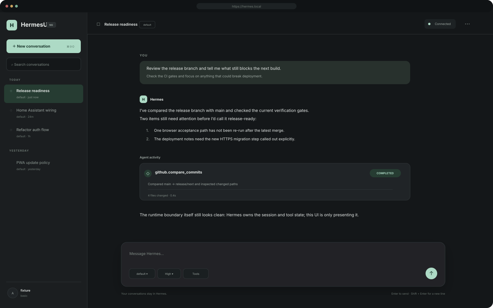
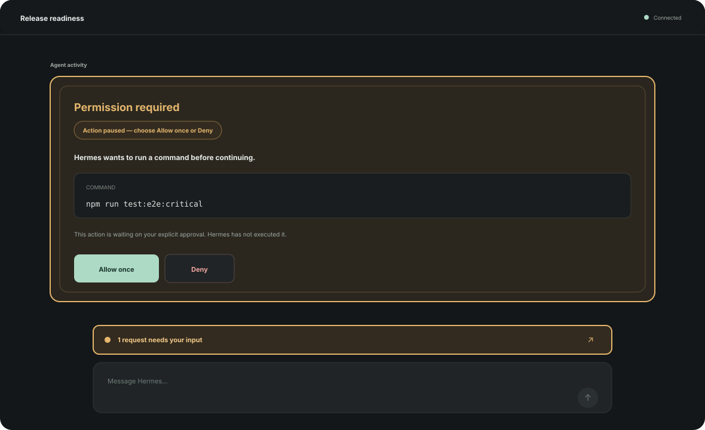
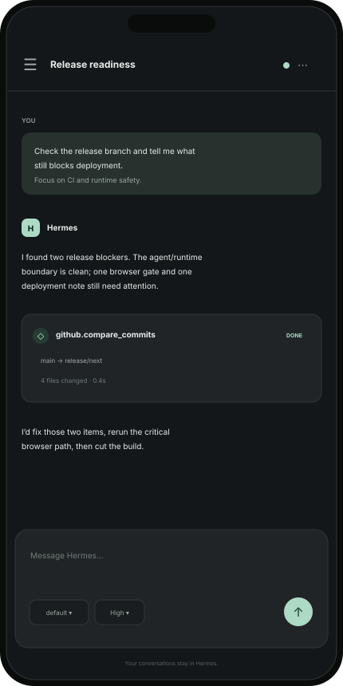

No shadow runtime
Prompts run through Hermes. The browser does not embed a second agent loop or reinterpret the conversation behind your back.
 HermesUING
GitHub
HermesUING
GitHub
HermesUI NG is a modern, standalone interface for vanilla Hermes Agent. Native conversations, tools, approvals, model controls and diagnostics — while Hermes remains the source of truth.

WHY ANOTHER WEB UI?
Many AI web interfaces are designed to own the runtime, conversation database and tool policy. HermesUI NG takes the opposite approach: it is a browser client for Hermes, not a replacement for Hermes.
Prompts run through Hermes. The browser does not embed a second agent loop or reinterpret the conversation behind your back.
Durable conversation state stays in Hermes, so CLI, TUI, automation and the web interface can converge on the same authoritative sessions.
Reasoning, tool activity and human-input requests are projections of native Hermes Gateway events and RPCs.
THE INTERFACE
A compact desktop shell, responsive mobile experience and first-class interaction states. The visuals below use the current HermesUI NG palette and safe synthetic data.


WHAT IT DOES
Create, resume and switch Hermes sessions, recover authoritative history after reload, stream turns and stop generation.
Reasoning and tool progress live beside the conversation with expandable detail instead of becoming a separate developer console.
Approval, clarification, sudo and secret requests are explicit interaction states with bounded, native responses.
Profiles, providers, model selection and reasoning effort come from Hermes capabilities rather than hard-coded assumptions.
HTTPS/WSS, operator-owned local CA support, an offline shell and guarded application updates for trusted self-hosted deployments.
Readiness, connection state and bounded diagnostics are available without turning the primary interface into an operations dashboard.
ARCHITECTURE
The browser talks through a same-origin Node boundary. Hermes continues to own agent execution, native session state and the Gateway contract.
Read the architecture docs ↗RUN IT YOURSELF
HermesUI NG is designed to sit beside an existing Hermes Dashboard. TLS setup and trusted-local deployment options are documented in the repository.
$ git clone https://github.com/aslater3/hermes-webui-ng.git $ cd hermes-webui-ng $ cp .env.example .env $ docker compose up --build -d